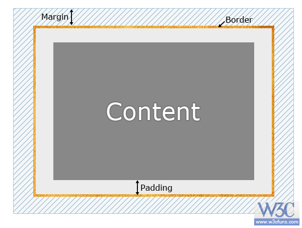

元素类型
- 块级元素：其他元素的容器，独占一行，宽高生效，div,p
- 内联元素(行内元素)：容纳文本或者其他内联元素，共享一行，宽高失效，a
- 第三元素(特殊的内联元素)：img,input,button,textarea,label
两者的区别在于以下三点：例子
- 块级元素会独占一行，而内联元素则都会在一行内显示。
- 块级元素可以设置width、height属性，而内联元素设置无效，内联元素关注的是行高！
- 块级元素的 width 默认为 100%，而内联元素则是根据其自身的内容或子元素来决定其宽度。
复习
- 前面遇到的样式小结小练习
- width
- height
- line-height
- margin
- padding
- font-size
- color
- background
- border
- display
复习：盒模型，块状/内联元素

元素类型
- 块状元素：一般当作 容器 包含其他元素可设置宽高，且独自占据一行
- 内联元素：一般存放内容，宽度由内容长度决定，高度由内容行高决定，共用一行
进阶：块状/内联元素&盒模型栗子
- 修改合模型的样式：widht、height、padding、margin
-
对行内元素：宽高属性无效，高度由line-height行高确定；宽度由内容和padding/margin值确定，纵向的padding值确实存在但不会对自身的位置产生影响；margin负值去实验～
- 对块状元素：全部生效
- 特殊的inline-block：还是去实验吧～
letter-spacing作用
- 字间距
- 消除inline-block元素间的换行符空格间隙问题
块状元素如何放在一行？见下一个重要概念：
浮动